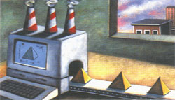
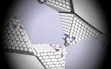
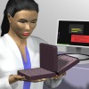

|
Daha
ileri bir gelecekte ise bu teknoloji ile insanlar evlerinde
dahi birçok karmaþýk imalat iþini halledebilecek seviyeye
gelebileceklerdir. Eskiden iki boyutlu çýktý almanýn
tek yolu el ile yazmaktý. Þimdi ise ink-jet veya lazer
yazýcýlar sayesinde bu iþin ne kadar kolaylaþtýðý aþikardýr.
Bu örneði üç boyuta taþýdýðýmýzda ise, günümüzde evlere
dahi girmiþ iki boyutlu yazýcýlara denk üç boyutlu yazýcýlar
ileride neden olmasýn?
Not: Kiþilerin düþük bir yatýrýmla evlerinde otoinþa cihazý imal edebilmeleri için oluþturulan bir organizasyon bu yönde atýlmýþ adýmlardan biridir;
www.fabathome.org > Fab@Home is a project dedicated to making and using fabbers - machines that can make almost anything, right on your desktop.
(Bu not, 09-01-2008'de eklenmiþtir)
Örnek
animasyon; NanoFactory:
Aþaðýda, Haziran 2006 tarihinde hazýrlanmýþ temsili
bir NanoFactory videosundan sahneler görünmektedir.
Bu senaryoda, kolay bulunabilen temel hammaddeler, molekül
bazýnda manipüle edilerek mekanik ve elektronik aksamýyla
çalýþan, çok geliþmiþ özelliklere sahip bir el bilgisayarý
üretiliyor;
|
|

|

|
|
Masaüstü
NanoFactory
|
Molekül
manipülasyonu
|
Son
ürün: El bilgisayarý
|
Kaynak: www.nanorex.com
> Productive Nanosystems (From molecules to superproduct)
Otoinþa cihazlarý, bir baþka deðiþle 3 boyutlu yazýcýlarýn
ilk örnekleri ucuzlayýp evlere girdiðinde, evin çocuðu
internetten çektiði üç boyutlu bir oyuncak verisini
kullanarak kendi oyuncaðýný
inþa edebilecek.. veya evde kullandýðýnýz cihazýn
bir parçasý bozuldu ise parçayý fabrikadan getirtmek
yerine sadece gerekli geometri ve malzeme bilgisini
satýn almanýz yeterli olabilecektir...
Bu ise topluma yeni
bir yaþayýþ tarzý getirecek, artýk malýn transferinden
çok bilginin transferi önem kazanacaktýr. Bilgi çaðý
dedikleri de bu olsa gerek?..
|